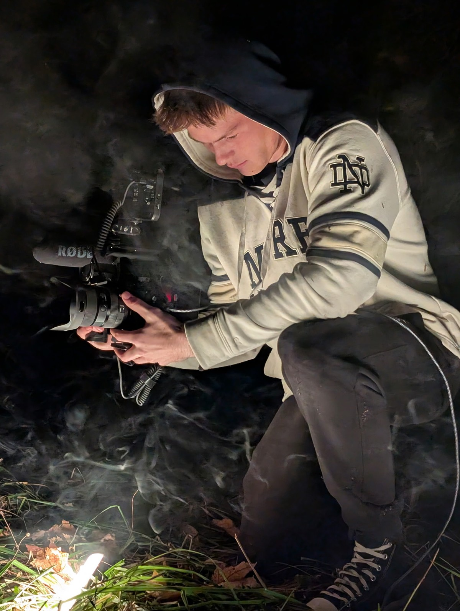

The screening library
Video production / Photography
Selected films.
Explore the work.
Discover the process.
01 / 04 — SCLA 20th Anniversary VideoSelect a project. Explore the story.
01 / Behind the work

I love helping people bring their vision to fruition.
I work one-on-one with clients to understand their vision and carry it through production. As their producer, cinematographer, and editor, I offer a consistent point of contact from the initial idea to the finished film.
I find joy in seeing how a finished project affects people. Seeing the work come together is rewarding; seeing others connect with it is what makes the process meaningful to me.